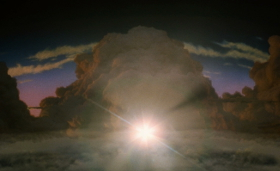

Twelve Tales Told (3D)
Johann Lurf
Österreich 2014
4 min – HD – ohne Dialoge
Konzept: Johann Lurf – V: Sixpackfilm
„Ein Dutzend Studiologos spult vor uns ab, wie wir sie als Vorspann zu Hollywoodproduktionen kennen. Allerdings sind die Logos − manche in auftrumpfendem Hochglanz animiert (Disney, Paramount), andere zurückhaltender gestaltet (Regency, Warner Bros.) – Bild für Bild ruckend ineinander verwoben, wobei die Sequenzen fortlaufend kürzer werden. Das Resultat mutet wie eine ununterbrochene bombastische Antiklimax an: der eskalierende Trommelwirbel für die Hauptattraktion will nicht aufhören und wird so selbst zur Hauptattraktion. Eine einzige, Supermarke, die Hollywood donnert. Wer braucht Geschichten, wenn Marken ihre eigenen erfinden können?“ – Daniel Kasman
donnerstag 8 okt 20.00 uhr filmmuseum münchen – eröffnung
Johann Lurf geb. 1982 in Wien. 2002–2009 Studium an der Akademie der bildenden Künste Wien. Diplom bei Harun Farocki. Johann Lurf lebt und arbeitet in Wien.
Filme (Auswahl) Vertigo Rush 2007 – 12 Explosionen 2008 (4. UX) – Zwölf Boxkämpfer jagen… 2009 (5. UX) – Endeavour 2010 – Kreis Wr.Neustadt 2011 (5. UX) – Reconnaissance 2012 (8. UX) – Embargo 2014 (10. UX) – Twelve Tales Told 2014